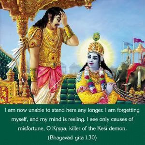
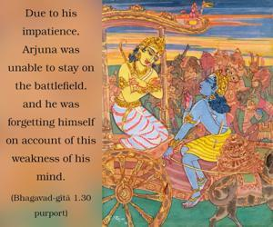
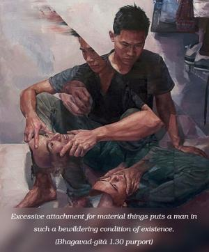
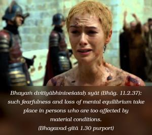
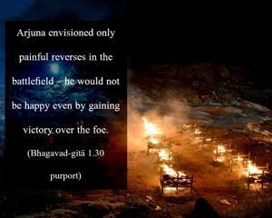
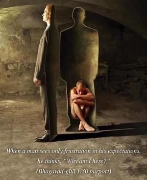

I am now unable to stand here any longer. I am forgetting myself, and my mind is reeling. I see only causes of misfortune, O Kṛṣṇa, killer of the Keśī demon.






Due to his impatience, Arjuna was unable to stay on the battlefield, and he was forgetting himself on account of this weakness of his mind. Excessive attachment for material things puts a man in such a bewildering condition of existence. Bhayaṁ dvitīyābhiniveśataḥ syāt (Bhāg. 11.2.37): such fearfulness and loss of mental equilibrium take place in persons who are too affected by material conditions. Arjuna envisioned only painful reverses in the battlefield – he would not be happy even by gaining victory over the foe. The words nimittāni viparītāni are significant. When a man sees only frustration in his expectations, he thinks, “Why am I here?” Everyone is interested in himself and his own welfare. No one is interested in the Supreme Self. Arjuna is showing ignorance of his real self-interest by Kṛṣṇa’s will. One’s real self-interest lies in Viṣṇu, or Kṛṣṇa. The conditioned soul forgets this, and therefore suffers material pains. Arjuna thought that his victory in the battle would only be a cause of lamentation for him.